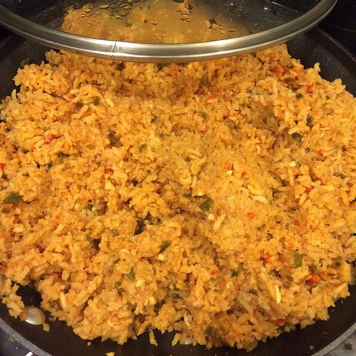

Mexican Rice

For this dish, we are going to make Mexican Rice
Mexican rice is my all time favorite rice. It goes well along with main dishes such as chicken steak etc. Rice is rather complicated to make,
so take your time and follow the instructions listed below.
Ingredients
- 3 tablespoons vegetable oil
- 1 cup long grain white rice
- 2 1/2 cups chicken broth
- 1 (4 ounce) can tomato sauce
- 1 (4 ounce) can canned chopped green chiles, drained
- 1 small onion, minced
- 2 cloves garlic, minced
- 2 cloves, garlic
- 1/2 teaspoon ground cummin
- 1/4 teaspoon chili powder
- 1 1/2 cups shredded Monterey Jack cheese